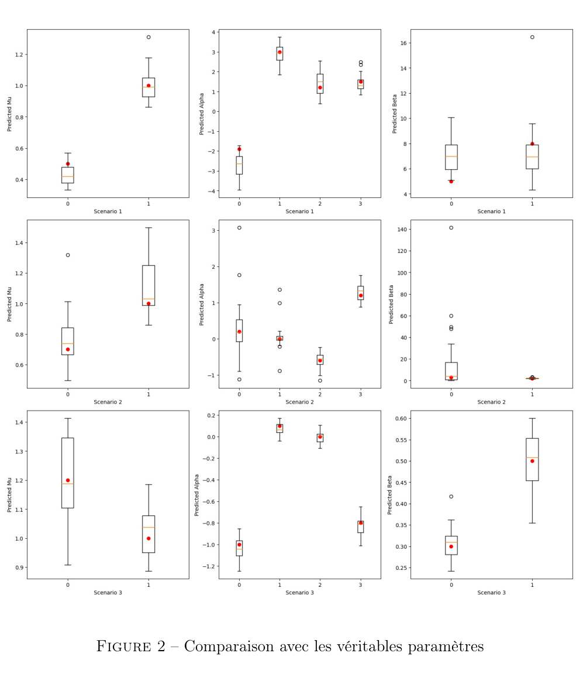

HUGO WEI / SELECTED WORKENGINEERING · MATHEMATICS · FINANCE
RESEARCH / SELECTED PROJECTS
Research
portfolio.
I develop research projects and practical tools in quantitative finance, mathematics and computation, alongside previous collaborative research.
SELECTED WORKCOMPLETED COLLABORATIVE REPORTS

2024 / MARKET MICROSTRUCTURE
Hawkes processes & inhibition
How can event-arrival models capture both excitation and inhibition in financial markets?
Read the overview ↗
EARLIER TEAM STUDY / TECHNOLOGY & SOCIETY
Big Data & sustainability
The benefits of large-scale data analysis, weighed against environmental, ethical and governance costs.
Read the overview ↗02 / LOOKING AHEAD
Explore topics ↗Physics, in progress.
Quantum information, dynamics and computational approaches.